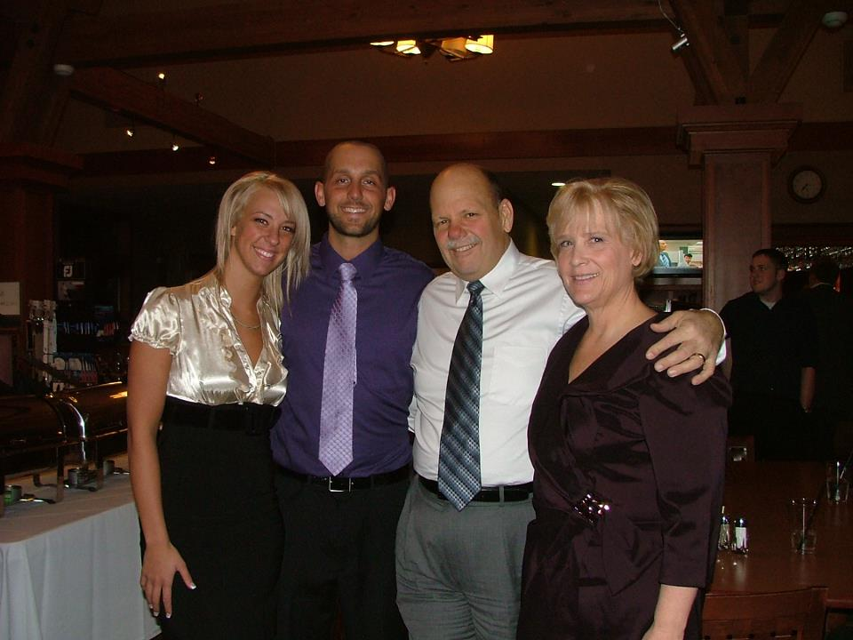

Home | Family | Educational Background | Professional Accomplishments | Community Involvement | Contact
Home | Family | Educational Background | Professional Accomplishments | Community Involvement | Contact
Family
Throughout our 35 years together, David has been a loving husband and father. He has always been, and is still, a strong and compassionate example, not only for our two sons, Austin and Travis, but also for me. He is the first to encourage me whether it is introducing me to the excitement of Disneyland for the first time, encouraging me to continue my education, or supporting me in my church activities. Our marriage has truly become a partnership in every way. |
 |
Since moving to Spring Creek, David also became very involved in various community organizations. Even this was often done with his family in mind. He has actively worked in the Boy Scouts of America in various positions, which allowed him to serve as a Cubmaster and Scoutmaster for his sons’ pack or troop. Even now, he is working closely with Travis as he is advancing toward his rank of Eagle Scout. He has served with many organizations on behalf of Elko County, from the Elko County Library Board to United Way, and continues to actively work to help give back to and enhance our communities. David and I have a wonderful family. Our older son, Austin, who graduated from Spring Creek High School in 2003, just graduated from Southern Oregon University in Ashland, Oregon. Austin graduated from SOU with a degree in Criminal Justice. He recently married Chanell Krebs on 11-11-11 and started a business in Ashland, Oregon called the RedZone. Travis is graduating this year with a degree in Criminal Justice from Southern Oregon University in Ashland, Oregon. During our marriage, I have had the unique opportunity of working closely with David, not only at home, but also at work. We have worked together professionally throughout our marriage which has created a strong and very close bond between us. Working with him, I have witnessed first hand his ability to show firmness, compassion and fairness in dealing with people, no matter their age or gender. It is these very traits, along with his loyalty and dedication to the community, that not only make him a good attorney, but would make him the right choice for Justice of the Peace.
|